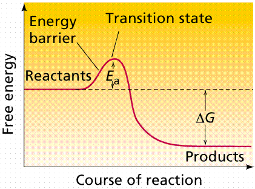
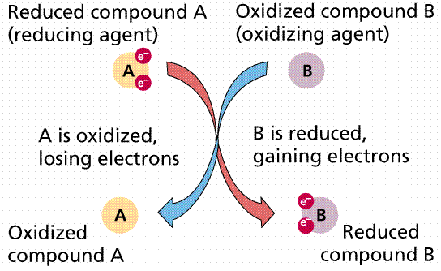
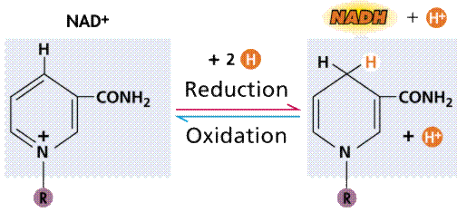
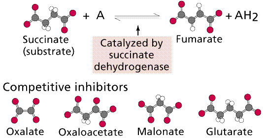

Energy releasing processes, ones that "generate" energy, are termed exergonic reactions. Reactions that require energy to initiate the reaction are known as endergonic reactions. All natural processes tend to proceed in such a direction that the disorder or randomness of the universe increases (the second law of thermodynamics).

Time-energy graphs of an exergonic reaction (top) and endergonic reaction (bottom). Images from Purves et al., Life: The Science of Biology, 4th Edition, by Sinauer Associates (www.sinauer.com) and WH Freeman (www.whfreeman.com), used with permission.
Biochemical reactions in living organisms are essentially energy transfers. Often they occur together, "linked", in what are referred to as oxidation/reduction reactions. Reduction is the gain of an electron. Sometimes we also have H ions along for the ride, so reduction also becomes the gain of H. Oxidation is the loss of an electron (or hydrogen). In oxidation/reduction reactions, one chemical is oxidized, and its electrons are passed (like a hot potato) to another (reduced, then) chemical. Such coupled reactions are referred to as redox reactions. The metabolic processes glycolysis, Kreb's Cycle, and Electron Transport Phosphorylation involve the transfer of electrons (at varying energy states) by redox reactions.

Passage of electrons from compound A to compound B. When A loses its electrons it is oxidized; when B gains the electrons it is reduced. Image from Purves et al., Life: The Science of Biology, 4th Edition, by Sinauer Associates (www.sinauer.com) and WH Freeman (www.whfreeman.com), used with permission.

Oxidation/reduction via an intermediary (energy carrier) compound, in this case NAD+. Images from Purves et al., Life: The Science of Biology, 4th Edition, by Sinauer Associates (www.sinauer.com) and WH Freeman (www.whfreeman.com), used with permission.
Anabolism is the total series of chemical reactions involved in synthesis of organic compounds. Autotrophs must be able to manufacture (synthesize) all the organic compounds they need. Heterotrophs can obtain some of their compounds in their diet (along with their energy). For example humans can synthesize 12 of the 20 amino acids, we must obtain the other 8 in our diet. Catabolism is the series of chemical reactions that breakdown larger molecules. Energy is released this way, some of it can be utilized for anabolism. Products of catabolism can be reassembled by anabolic processes into new anabolic molecules.
Enzymes allow many chemical reactions to occur within the homeostasis constraints of a living system. Enzymes function as organic catalysts. A catalyst is a chemical involved in, but not changed by, a chemical reaction. Many enzymes function by lowering the activation energy of reactions. By bringing the reactants closer together, chemical bonds may be weakened and reactions will proceed faster than without the catalyst.
The use of enzymes can lower the activation energy of a reaction (Ea). Image from Purves et al., Life: The Science of Biology, 4th Edition, by Sinauer Associates (www.sinauer.com) and WH Freeman (www.whfreeman.com), used with permission.
Enzymes can act rapidly, as in the case of carbonic anhydrase (enzymes typically end in the -ase suffix), which causes the chemicals to react 107 times faster than without the enzyme present. Carbonic anhydrase speeds up the transfer of carbon dioxide from cells to the blood. There are over 2000 known enzymes, each of which is involved with one specific chemical reaction. Enzymes are substrate specific. The enzyme peptidase (which breaks peptide bonds in proteins) will not work on starch (which is broken down by human-produced amylase in the mouth).
Enzymes are proteins. The functioning of the enzyme is determined by the shape of the protein. The arrangement of molecules on the enzyme produces an area known as the active site within which the specific substrate(s) will "fit". It recognizes, confines and orients the substrate in a particular direction.
Space filling model of an enzyme working on glucose. Note the shape change in the enzyme (indicated by the red arrows) after glucose has fit into the binding or active site. Image from Purves et al., Life: The Science of Biology, 4th Edition, by Sinauer Associates (www.sinauer.com) and WH Freeman (www.whfreeman.com), used with permission.
The induced fit hypothesis suggests that the binding of the substrate to the enzyme alters the structure of the enzyme, placing some strain on the substrate and further facilitating the reaction. Cofactors are nonproteins essential for enzyme activity. Ions such as K+ and Ca+2 are cofactors. Coenzymes are nonprotein organic molecules bound to enzymes near the active site. NAD (nicotinamide adenine dinucleotide).
A cartoonish view of the formation of an enzyme-substrate complex. Image from Purves et al., Life: The Science of Biology, 4th Edition, by Sinauer Associates (www.sinauer.com) and WH Freeman (www.whfreeman.com), used with permission.
Enzymatic pathways form as a result of the common occurrence of a series of dependent chemical reactions. In one example, the end product depends on the successful completion of five reactions, each mediated by a specific enzyme. The enzymes in a series can be located adjacent to each other (in an organelle or in the membrane of an organelle), thus speeding the reaction process. Also, intermediate products tend not to accumulate, making the process more efficient. By removing intermediates (and by inference end products) from the reactive pathway, equilibrium (the tendency of reactions to reverse when concentrations of the products build up to a certain level) effects are minimized, since equilibrium is not attained, and so the reactions will proceed in the "preferred" direction.
Negative feedback and a metabolic pathway. The production of the end product (G) in sufficient quantity to fill the square feedback slot in the enzyme will turn off this pathway between step C and D. Image from Purves et al., Life: The Science of Biology, 4th Edition, by Sinauer Associates (www.sinauer.com) and WH Freeman (www.whfreeman.com), used with permission.
Temperature: Increases in temperature will speed up the rate of nonenzyme mediated reactions, and so temperature increase speeds up enzyme mediated reactions, but only to a point. When heated too much, enzymes (since they are proteins dependent on their shape) become denatured. When the temperature drops, the enzyme regains its shape. Thermolabile enzymes, such as those responsible for the color distribution in Siamese cats and color camouflage of the Arctic fox, work better (or work at all) at lower temperatures.
Concentration of substrate and product also control the rate of reaction, providing a biofeedback mechanism.
Activation, as in the case of chymotrypsin, protects a cell from the hazards or damage the enzyme might cause.
Changes in pH will also denature the enzyme by changing the shape of the enzyme. Enzymes are also adapted to operate at a specific pH or pH range.
Plot of enzyme activity as a function of pH for several enzymes. Note that each enzyme has a range of pH at which it is active as well as an optimal pH at which it is most active. Image from Purves et al., Life: The Science of Biology, 4th Edition, by Sinauer Associates (www.sinauer.com) and WH Freeman (www.whfreeman.com), used with permission.
Allosteric Interactions may allow an enzyme to be temporarily inactivated. Binding of an allosteric effector changes the shape of the enzyme, inactivating it while the effector is still bound. Such a mechanism is commonly employed in feedback inhibition. Often one of the products, either an end or near-end product act as an allosteric effector, blocking or shunting the pathway.
Action of an allosteric inhibitor as a negative control on the action of an enzyme. Image from Purves et al., Life: The Science of Biology, 4th Edition, by Sinauer Associates (www.sinauer.com) and WH Freeman (www.whfreeman.com), used with permission.
Competitive Inhibition works by the competition of the regulatory compound and substrate for the binding site. If enough regulatory compound molecules bind to enough enzymes, the pathway is shut down or at least slowed down. PABA, a chemical essential to a bacteria that infects animals, resembles a drug, sulfanilamide, that competes with PABA, shutting down an essential bacterial (but not animal) pathway.

Top: general diagram showing competitor in the active site normally occupied by the natural substrate; Bottom: specific case of succinate dehydrogenase and its natural substrate (succinate) and competitors (oxalate et al.). Images from Purves et al., Life: The Science of Biology, 4th Edition, by Sinauer Associates (www.sinauer.com) and WH Freeman (www.whfreeman.com), used with permission.
Noncompetitive Inhibition occurs when the inhibitory chemical, which does not have to resemble the substrate, binds to the enzyme other than at the active site. Lead binds to SH groups in this fashion. Irreversible Inhibition occurs when the chemical either permanently binds to or massively denatures the enzyme so that the tertiary structure cannot be restored. Nerve gas permanently blocks pathways involved in nerve message transmission, resulting in death. Penicillin, the first of the "wonder drug" antibiotics, permanently blocks the pathways certain bacteria use to assemble their cell wall components.
Back to Table of Contents | Go To ATP AND BIOLOGICAL ENERGY
Email: mj.farabee@emcmail.maricopa.edu
Last modified:
The URL of this page is: